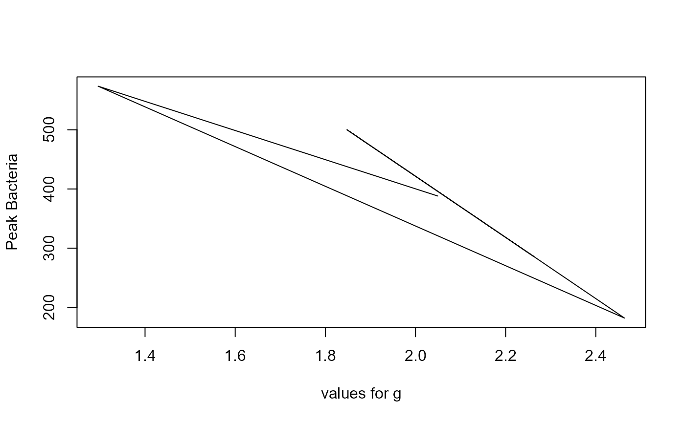

Simulation to illustrate uncertainty and sensitivity analysis
Source:R/simulate_SIR_usanalysis.R
simulate_SIR_usanalysis.RdThis function performs uncertainty and sensitivity analysis using the SIRS model.
Usage
simulate_SIR_usanalysis(
Smin = 1000,
Smax = 1000,
Imin = 10,
Imax = 10,
bmin = 0.005,
bmax = 0.01,
gmean = 0.5,
gvar = 0.01,
nmin = 0,
nmax = 0,
mmin = 0,
mmax = 0,
wmin = 0,
wmax = 0,
samples = 5,
rngseed = 100,
tstart = 0,
tfinal = 500,
dt = 0.1
)Arguments
- Smin
: lower bound for initial susceptible : numeric
- Smax
: upper bound for initial susceptible : numeric
- Imin
: lower bound for initial infected : numeric
- Imax
: upper bound for initial infected : numeric
- bmin
: lower bound for infection rate : numeric
- bmax
: upper bound for infection rate : numeric
- gmean
: mean for recovery rate : numeric
- gvar
: variance for recovery rate : numeric
- nmin
: lower bound for birth rate : numeric
- nmax
: upper bound for birth rate : numeric
- mmin
: lower bound for death rate : numeric
- mmax
: upper bound for death rate : numeric
- wmin
: lower bound for waning immunity rate : numeric
- wmax
: upper bound for waning immunity rate : numeric
- samples
: number of LHS samples to run : numeric
- rngseed
: seed for random number generator : numeric
- tstart
: Start time of simulation : numeric
- tfinal
: Final time of simulation : numeric
- dt
: times for which result is returned : numeric
Value
The function returns the output as a list. The list element 'dat' contains a data frame. The simulation returns for each parameter sample the peak and final value for I and final for S. Also returned are all parameter values as individual columns and an indicator stating if steady state was reached. A final variable 'steady' is returned for each simulation. It is TRUE if the simulation did reach steady state, otherwise FALSE.
Details
The SIRS model with demographics is simulated for different parameter values. The user provides ranges for the initial conditions and parameter values and the number of samples. The function does Latin Hypercube Sampling (LHS) of the parameters and runs the model for each sample. Distribution for all parameters is assumed to be uniform between the min and max values. The only exception is the recovery parameter, which (for illustrative purposes) is assumed to be gamma distributed with the specified mean and variance. This code is part of the DSAIDE R package. For additional model details, see the corresponding app in the DSAIDE package.
Warning
This function does not perform any error checking. So if you try to do something nonsensical (e.g. specify negative parameter values or fractions > 1), the code will likely abort with an error message.
See also
See the Shiny app documentation corresponding to this simulator function for more details on this model.
Examples
# To run the simulation with default parameters just call the function:
if (FALSE) result <- simulate_SIR_usanalysis() # \dontrun{}
# To choose parameter values other than the standard one, specify them, like such:
result <- simulate_SIR_usanalysis(gmean = 2, gvar = 0.2, samples = 5, tfinal = 50)
# You should then use the simulation result returned from the function, like this:
plot(result$dat[,"g"],result$dat[,"Ipeak"],xlab='values for g',ylab='Peak Bacteria',type='l')
